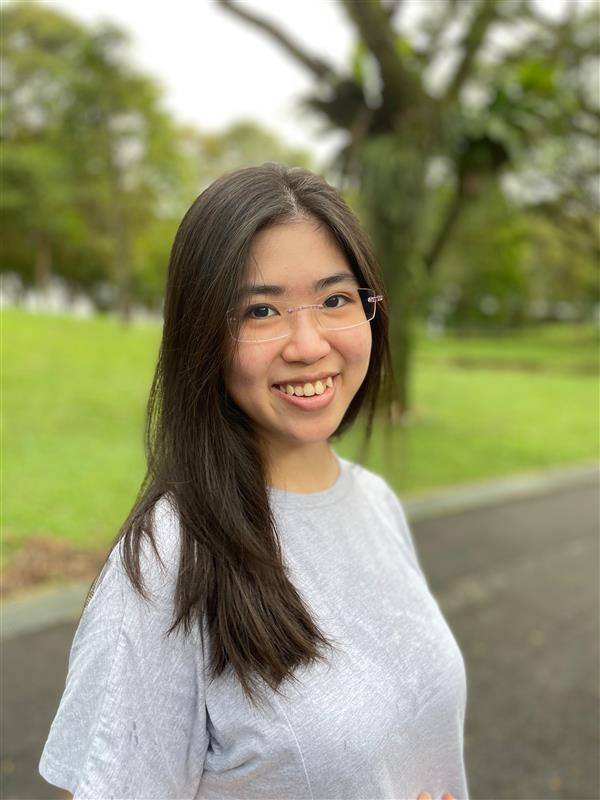

|  | ONG Jing HuiPhD StudentJan 2021 – presentDepartment of Biological SciencesNational University of Singapore
Email: ong.jinghui(AT)u.nus.edu |
Bio
Studying marine biology had always seemed like a distant dream — nice but probably unattainable — until I began my university studies at NUS; it seemed like a whole new world with many exciting opportunities had opened up. My passion for ecology and the environment grew the more I learnt about the subject, and my past and current research experience has cemented my decision to be a marine researcher. In particular, working on my final year project (diversity and distribution of algal endosymbiont (Symbiodiniaceae) communities in corals) at the Reef Ecology Lab opened my eyes to the exciting challenge of being at the forefront of discovery. Having profiled the diversity and distribution patterns of Symbiodiniaceae in the region, my PhD research takes it one step further and seeks to understand the role of marine connectivity in driving these patterns.
Current Research
The movement of marine organisms along spatial scales has implications on the vulnerability and resilience of marine ecosystems. Hence, the understanding of marine connectivity is crucial for the prediction of how marine life may be impacted by and recover from climate change and anthropogenic impacts.
My current research uses a population genomics approach to examine connectivity patterns and barriers in Singapore’s seascape through the analysis of genomic information of different species from a broad range of taxa. I aim to then identify areas important for biodiversity through the incorporation of patterns of population connectivity in spatial conservation prioritisation. Findings will help guide conservation decision-making and the efficient allocation of conservation resources to better protect biodiversity in the face of climate change and development.
Academic History
B.Sc. with Honours (Highest Distinction) in Life Sciences (Specialisation: Environmental Biology), National University of Singapore: 2016 – 2020
Thesis: Diversity and Distribution of Symbiodiniaceae Communities Hosted by Reef Corals in the Malay Peninsula